波士顿和芝加哥是美国的主要城市中数学研究的两大基地，如果你去问波士顿的一个棒球迷，在他一生中最想看到的是什么时，在波士顿红袜队获得2004年棒球世界大赛冠军前，他们的回答肯定是红袜队夺取冠军，而芝加哥小熊队只能等待．去问问这些城市的或者世界任何地方的数学家们，在他们一生中最想看到的是什么时，他们极有可能回答：“黎曼假设的证明！”也许数学家像红袜队球迷那样也在祷告，祈求在他们活着时能看到答案，或者至少在小熊队赢得世界大赛前看到．
伯恩哈德·黎曼的生命跨越了不到四十个年头，一生中的著作仅仅够出单独的一本文集，其中的一些文章是在他于1866年初逝世后才发表的，不管怎样，或者可以说，正是由于他的这本薄薄的文集，他涉及的每一个问题都使得数学发生了革命性的变化．
黎曼（Georg Friedrich Bernhard Riemann）于1826年9月17日出生在德国北部的布雷塞棱茨，是弗里德里奇·伯恩哈德·黎曼和他的妻子夏洛蒂·艾贝尔的六个孩子中的老二，一年后全家搬到了附近的城市奎克伯恩，他的家庭没有任何东西可预示出黎曼的数学天才，他的父亲继承了一个悠久的路德教派的牧师家系，他的外祖父则是汉诺威法院的律师，不过，黎曼的天分不久就完全显现出来了，尽管他一生都具有难于与人交往的羞怯性格，但这也掩盖不了这种天分，黎曼在奎克伯恩当地的学校显得如此超群，以致校方专门给他安排了一个指导老师来教他高等的算术和几何，不久，这位老师已经意识到他从黎曼的精巧的解答中学到的比他教给黎曼的要多了．
留心到儿子的这种天分，在黎曼14岁时，他的父亲坚持让小伯恩哈德进了汉诺威的负有盛誉的文科中学．第一次离开双亲对黎曼来说十分艰辛，他不久便写信回家诉说他无法抵御的孤独感，只是由于他可以与他的外祖母住在一起，才使得这个感到痛苦的羞怯的男孩可以忍受与父母的分离．当两年后，他的外祖母逝世，他的父母勉强同意将他转学到邻近洛恩贝格的文科中学去完成高中的学业．
对于黎曼来说选择洛恩贝格的文科中学是一件幸运的事，当认识到这个新学生的天分后，洛恩贝格学校的校长允许黎曼进入他的私人图书馆，在那里有许多高等的数学著作．在黎曼请求校长为他推荐一本不要太容易的书时，他建议的是勒让德的巨著《数论》.一个星期后，当黎曼还书时，校长问他是否是一个大的挑战，黎曼对此的回答是，他很高兴得到这样一本让他花了整整一个星期才掌握的书，要知道它全部有859页！勒让德的《数论》无疑第一次向黎曼介绍了素数分布的研究，这是我们在这里所选择的的第三个主题．两年之后，黎曼要求将对勒让德的书的考试作为他的毕业考试的一部分，尽管在两年中再也没有看过这本著作，他却毫无疑义地完美地回答了每一个问题！
总是顺从于父母的黎曼进了格丁根大学，计划去取得神学和哲学的学位，从而可以追随他父亲的牧师职业，尽管他做了很大的努力去满足家庭的愿望，但仍然抵抗不了格丁根的一个也是唯一的一个明星数学家——卡罗·弗里德里希·高斯的吸引力，黎曼被高斯的关于最小二乘法的演讲迷住了，从而决定以数学作为他的事业．那时，高斯已经年逾八十，而且身体状况不佳．他建议黎曼转学到柏林大学去，在那里他可以跟新一代的德国数学家学习，他们包括：施耐德·雅可比、爱森斯坦，特别是狄利克雷．黎曼觉得柏林离奎克伯恩太远，但他父母力主他听从高斯的建议，于是他去了柏林．
在1849年得到了学士学位后，黎曼便回到了格丁根继续跟高斯读博士．1851年黎曼将他的博士论文交给了高斯，论文的标题是“单复变函数一般理论的基础”．接近他在格丁根学习结束的时候，高斯意识到他已最终找到了一个合格的接班人，并不吝溢美之词地赞扬了黎曼的学位论文．
一个月后黎曼成功地通过了他的论文答辩．
由于在德国的大学里只有少许的教学位置，刚毕业的博士生们还不得不干一些没有薪水的工作，然后继续写第二份称之为“Habilitation（大学授课资格）”的论文，然后还要给一个“Habilitation”演讲以证明有资格取得一份有薪水的岗位．对于他的Habilitation”，黎曼选的是《论函数的三角函数级数表示》，目的在于回答他的老师狄利克雷关于在傅里叶公式中积分的意义的质询．作为我们在这里选登的第一篇的便是他所写的这篇文章，那时他是W．韦伯的数学物理讨论班的不拿薪水的助手．
对于莱布尼茨，定积分∫y（x）dx是无穷多个小项的和：∑yi（x）Δi（x）．
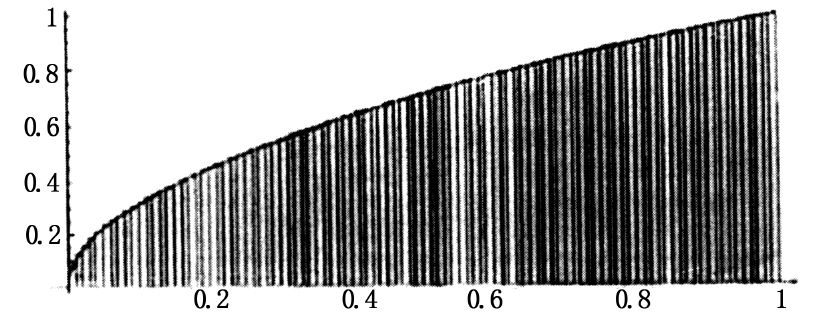
但是，当发现积分就是切线的逆时，数学家们便避开了求和的计算而偏爱于取不定积分的差．傅里叶关于用三角函数作函数表示的工作迫使数学家们处理没有显然的不定积分的函数积分，它让他们不得不在一般的不定积分的原函数没有找到时去找出一个积分的方法．按照柯西处理积分的方法，数学家们能够容易建立逐段连续函数的积分，这已为狄利克雷在1829年做到了．狄利克雷把设计一个对于一个极大类函数的积分的方法的任务留给了他的后继者，黎曼便是找到了一个解决办法的人．柯西在计算收敛于定积分的柯西和时，是将函数值取在每个子区间的两个端点中的一个上的．
（在左端点取值的）柯西积分
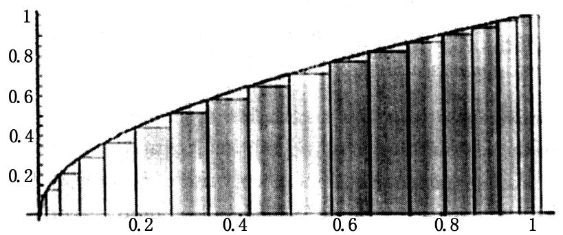
相对照地，黎曼要求在每个子区间可以选取任意值来计值的黎曼和必须在分割的范数递降为零时收敛于一个极限．
（在任意点取值的）黎曼积分
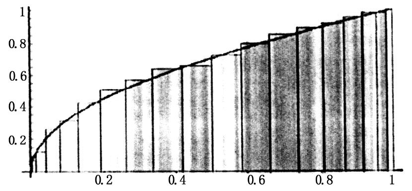
对于在区间［a，b］中函数的柯西积分的存在性依赖于f（x）在区间［a，b］中的连续性，对于函数f（x）的黎曼积分的存在性依赖于一个有关联但完全不同的概念：变差．黎曼像柯西那样，以点集x1，x2，x3，…，xn-1，xn来划分区间［a，b］着手，使得a=x0<x1<x2<x3<…<xn-1<xn=b，然后他考虑了f（x）在每个子区间［xk-1，xk］上的变差，即该函数在子区间［xk-1，xk］上值差的最大值，也就是对满足xk-1<s，t<xk的任意t，s的
Dk=max|f（s）-f（t）｜.
函数f（x）在区间上的变差是指每个Dk与相应的子区间［xk-1，xk］的长度的乘积的和；即
∑Dk（xk-xk-1）．
黎曼意识到当分割的范数，即（xk-xk-1）中的最大值趋向于0时，这个和必须要趋向0．非正式地说，这可以描述为除了在任意小长度的区间外它是连续的．那么，譬如狄利克雷函数，它的取值如下：
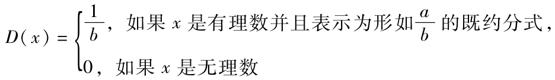
便可以积分，这是因为D（x）的值在有理点全都小于1，而且x的有理值是可数的，而它的第n个这样的值包含在一个长度为
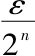
的区间中，故他们的总和为可以选为任意小的ε．对于
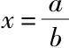
的D（x）=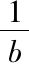
的小区间．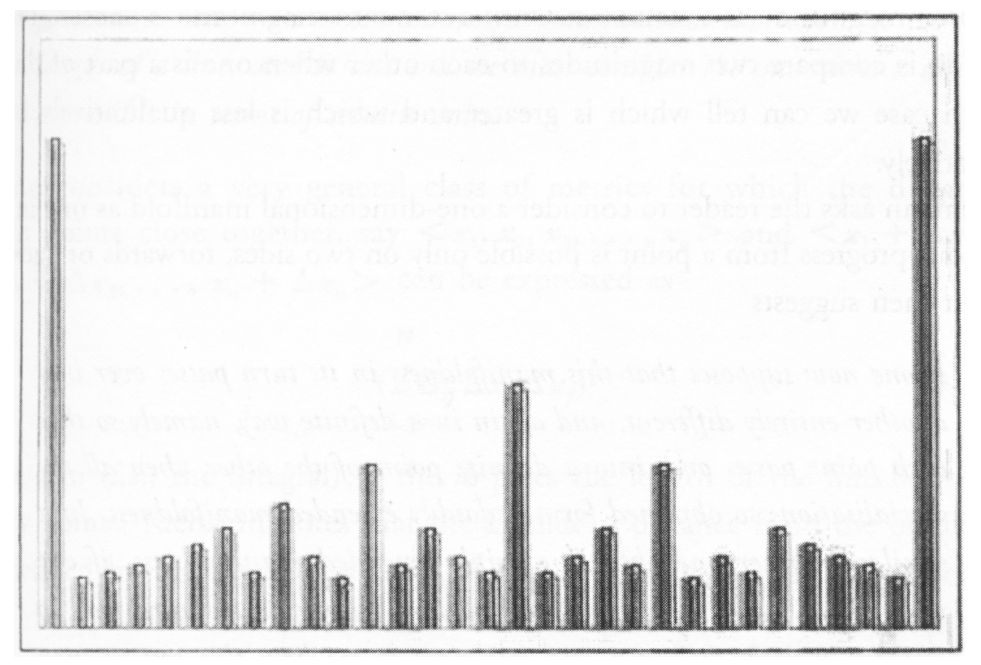
在黎曼活着的时候他从不对发表自己的这篇文章操心．他的朋友和同事R．戴德金在黎曼死后两年的1868年发表了它．在这几页中，黎曼给予了严格的测度论和积分理论五十年的发展动力，最后在1904年勒贝格的测度和积分论中达到了顶峰，在本书后面将加以叙述．
在完成他的Habilitation文章后，在他能够拿到他的付薪职位前，他还有最后一个障碍需要清除：他的Habilitation报告．高斯要求黎曼提出3个主题，黎曼以以下3个主题予以回应：
黎曼预料高斯会选择第一个主题作为他教学资格文章的陈述．让黎曼大吃一惊，高斯选择了第三个．戴德金认为这是由于高斯对这位年轻人如何掌握如此难的课题感觉好奇而为的，在克服了最初的惊愕之后，黎曼意识到他现在有机会写一篇能让广大听众能够理解的文章了，他也确实努力在这样做．
黎曼的分析一开始便将离散的各种形式与连续的各种形式区分开来．他注意到离散的，譬如自然数，相互的比较是由计数完成的．对照地，对于连续的，譬如空间，它们的比较则是由度量完成的．度量是由一个选取了的尺度作为标准去进行叠合做成的，只要一个标准的尺度选定了，我们所能做的也就是比较两个对象的相互大小，当一个是另一个的一部分时，我们则可以说出在数量上哪一个更大哪一个较小，但不是性质上的．
黎曼要求读者将一维流形想成是在其上从一个点能够向两个方向连续前进，向前或向后的流形．于是黎曼提出：
黎曼解释说，以一种相似的方式固定一个n维流形的一维的值结果得到一个n-1维的流形．于是黎曼做出了关键性的步骤．
让黎曼感兴趣的测度自然是两个点之间的距离，它等价地等于它们之间线段的长．
黎曼考虑了一个非常广的度量类，对它而言在靠近的点之间的距离ds，譬如（x1，x2，x3…，xn）与（x1+Δxi，x2+Δx2，x3+Δx3，…，xn+Δxn）的距离可表示为
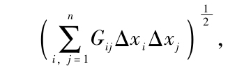
而且这些ds的和（即积分）给出了任意两个点之间线段的长．黎曼注意到从原点到由n个变量（x1，x2，x3，…，xn）的欧几里得距离，即变量平方和的平方根
仅仅是多种特别形式中的一个（如果i=j有Gij=1，否则为零），对于它而言的空间是平坦的．
黎曼认识到在空间的一个非常值曲率的物体上可以进行无伸缩的运动．他也证明了，如果一个三角形的角的和总是大于两个直角之和，则这个空间必是一个正曲率空间，如果这个和总是小于两个直角之和则此空间具负的曲率，而如果该和总恒等于两个直角之和，则此空间必是处处平坦．当然，空间不必是平坦的，甚至不必是具常曲率的，这是因为三角形的角之和必须是不变的．
注意到了高斯对于考察其角之和不同于两个直角的三角形的无功而返的尝试，黎曼写道：
黎曼的演讲以提出我们所在的物理空间仅是许多种三维空间中的一个作为开始，他说，我们的三维空间的度量性质必定是从经验导出的，它们不能仅仅从几何的公理和假设推导出来．在结束他的演讲时，黎曼说，
黎曼不会知道在他死后的五十年，这个工作给爱因斯坦所构建的广义相对论提供了数学基础．
本书的所选的他的第二篇文章的这个演讲必定取得了成功，因为高斯和韦伯每个人都给予了很高的赞扬．在过了最后这道关后，黎曼终于在1854年秋季开始了他的教学生涯，给总数为8个的学生讲了一系列关于偏微分方程的课，这个数量可比他预期的大了一倍．但这是个很难维持生计的方式，在他父亲在1855年死后，他的三个姐妹不得不从她们的另一个兄弟那里寻求资助，他是个邮局职员，挣的比穷困的数学家要多得多．这一年高斯也去世了，黎曼的朋友们知道了高斯的位置会落到黎曼以前的老师狄利克雷手中，他们劝说学校当局任命黎曼一个助教职位，但这个努力落空了．
父亲的逝世以及加剧的经济紧张对于黎曼温弱的性格而言过于沉重，以致在1855年后期使他精神崩溃．为了解除紧张情绪，黎曼退隐到了山区，与他的同事戴德金一起进行长距离的远足，使自己重新振作起来．在1875年校方给了他一个助教职位，好运似乎在敲他的门了．1858年，意大利数学家E.贝蒂（Enrico Betti），F.卡索拉蒂（Felice Casorati），和F．布里奥史（Francesco Brioschi）到格丁根拜访了黎曼，来与他讨论他的数学工作．
黎曼刚开始感觉到有了点经济保障时，他的兄长死了，留下三个未婚的姐妹让他来支持．不管是否巧合，黎曼第一次开始在这个经济状况最麻烦的时期中经受到肺病的痛苦．在一年里由于他的一个妹妹玛丽的早逝多少减轻了一点他的负担，一年后的1859年，随着他以前的老师狄利克雷逝世，黎曼继任了他在格丁根的位置，终于获得了他完全有资格取得的教授职位．
1859年也记录了黎曼被选进柏林科学院的事件．为了纪念对他的任命，黎曼写了他唯一的一篇关于数论的文章，标题为“论小于一个给定数的素数的个数”．无疑，他对这门学科的兴趣还是在15年前，当他还是洛恩贝格文学中学的学生时，在阅读勒让德的《数论》时萌生的．
勒让德和高斯都猜测计算小于x的所有素数个数的函数π（x）由Li（x）当x增大时渐近地趋近（即比值π（x）／Li（x）→1），其中
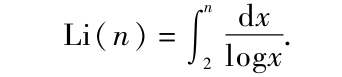
我以为这是篇最高级的数学精品；在这篇划时代的文章里黎曼引进了解决这个问题的全新的方法．他首先引进了倒数的s幂级数
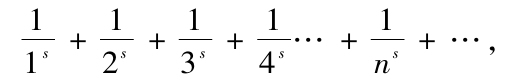
这是欧拉在18世纪中期第一个研究了的级数，他证明了对于s=2，此级数和取极限值等
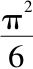
．黎曼以希腊字母称它为ζ函数．更正式地，ζ函数可表示为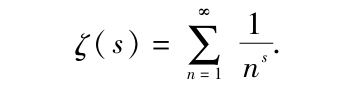
乍看起来，一个涉及所有正整数的无穷级数如何能与素数联系起来似乎远非显然．但是，欧拉已经提供了这种联系：他首先注意到由于整数的唯一分解定理，这个正整数倒数的s幂的无穷和
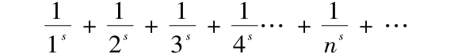
可以表示为每个素数p的无穷几何级数的乘积：
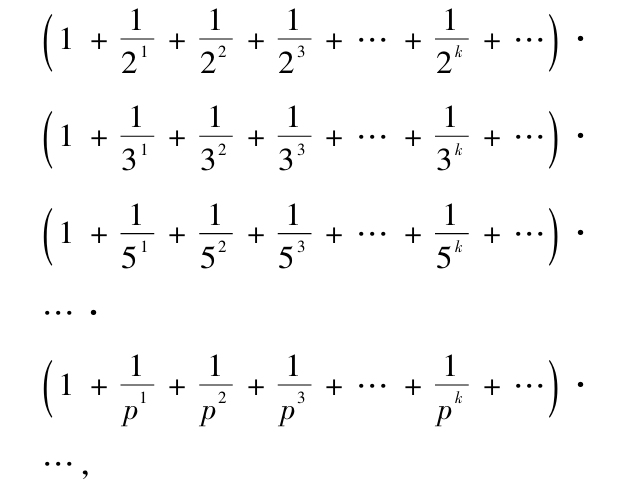
然后应用无穷几何级数的基本性质知
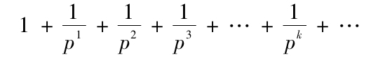
之和为
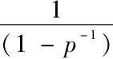
，从而ζ函数可表示为无穷乘积这些才是这种数学绝技的第一步，作为由这些无穷和和无穷乘积表示的ζ函数值在实部大于1的复数上收敛，从他的博士论文中提取了一些突破性的结果，黎曼将这个ζ函数延拓到了所有的复数，而只有在s=1有一个无穷值奇点．
在这篇文章中，黎曼做了一个随笔式的注解：
（一个值x是函数f（x）的根是说如果f（x）=0．函数ζ（x）的一个根为实的当且仅当ζ函数的一个根是个实部等于
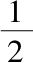
的复数．）在作了关于ζ函数的这个假设之后，黎曼最后写道：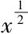
的量级．ζ函数根的值决定了π（x）和Li（x）之间的相差量．ζ函数的根的实部等于
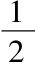
的假定已经以黎曼假设而知名．几年后，黎曼的前景短暂地光明一片，他在1862年7月与伊莉斯·柯赫（Elise Koch）结婚，柯赫是他姐妹们的一个朋友．婚后仅一月，黎曼便患了肋膜炎并随后又得了肺病，有影响力的朋友们劝说大学当局资助黎曼到意大利度过冬天以便康复．觉得自己已经恢复，黎曼在春季里便离开了意大利，并在穿过阿尔卑斯山进入瑞士的旅途中愚蠢地走进深雪中．接着便是旧病复发，他又在1863年8月返回了意大利，先停留在比萨，在那里他的妻子生了他们的第一个也是唯一的一个孩子艾达（Ida）．在比萨时，黎曼时不时地到当地的大学参加一些讲座，不久，那里的大学便在数学系的贝蒂．卡索拉蒂以及教育部长布里奥史的催促下要提供给黎曼教授职位．虽然他与格丁根大学的合同期阻止他接受这个提议，但德国的大学还是允许他延期在比萨的逗留，希望他能够恢复健康．不幸他没能恢复．黎曼在1866年7月死于Maggiore湖边的Salasco村，这时离他的四十岁生日还不足两个月．
在黎曼关于素数分布的文章发表好几十年之后，数学家们仍不知道他是如何得到ζ函数的所有零点都有实部
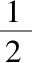
这个猜想的．这篇文章不仅没有给出黎曼是如何得到这个猜想的线索，而且甚至没有给出过知道ζ函数有任何一个零点的实部为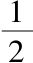
的背景．一些数学家直接认为黎曼拥有某种奇妙的洞察力．事实上，黎曼是通过大量的计算得到ζ函数性态的．在他死后，他的妻子从一位过分热心的女佣那里抢救出一大部分他的私人文稿，这位女佣正准备将这些放在炉中烧掉．伊莉斯·黎曼在她的余生中一直把它们锁藏了起来，只是到了1920年代才得以公开．在它们被公开后，对于编辑它们的数学家西格尔（C.L．Siegel）无疑是一件宝藏．西格尔看到，在迄今六十年间其他数学家们发现的许多具有强大威力的计算技术黎曼早就已发现了．完美主义者的黎曼没有发表这些方法是由于他缺少对于它们的有效性的证明．我们只能设想黎曼所完成的那些东西已经足以让他再享受二三十年的幸福生活了．
在黎曼逝世后的三十年间，在素数分布问题上没有任何真正的进展．之后，到了1890年代，阿达马（Hadamard von Mangold），瓦勒-泊桑（Vallée-Poissin）开拓出黎曼文章中的思想，证明了他的π（x）主公式及素数定理：
π（x）~Li（x），
其中
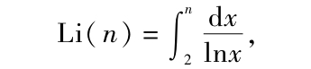
而这原是高斯和勒让德在一个世纪前的猜想．
希尔伯特将黎曼假设作为他在1900年国际数学家大会上提出的二十三问题中的第八个．希尔伯特充满信心地期待在十多年内这个假设就会被证明．由于黎曼假设抗拒了所有要破解它的企图，希尔伯特修改了他的预期．在他1943年逝世前不久，有人问希尔伯特如果他在500年后复活的话，他要问的第一个问题是什么．这位伟大的数学家立刻回应道，我会问：“有人解决了黎曼假设吗？”．
一个世纪后它仍未被证明，现在有一笔一百万美元的奖金正等待着那位去证明这个假设是对还是错的人．
没有人指望去证明它是不正确的．
数学家已经证明了至少解中的40%其实部为；的确如此，前面的十五亿个解的实部都是
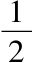
，但它还是没有被证明．黎曼死在一个太早的年纪．我们只能问道，如果他能再过上二三十年正常的，不为生计所累的日子，他会严格地证明以他自己的名字命名的假设吗？或许我们有幸会遇到它的出现，那么如果那个证明了的根就是黎曼的划时代的文章里写的，我们一点也不会感到惊讶．